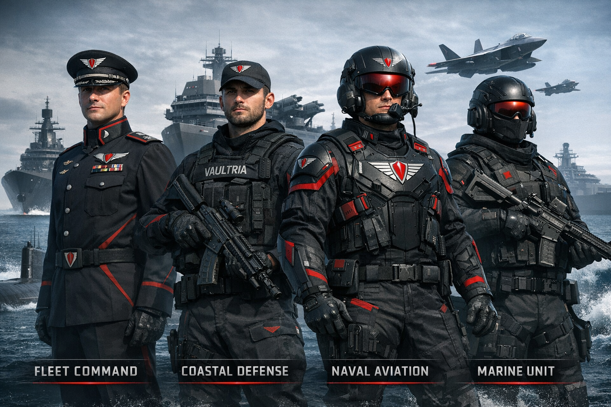

Defense & enforcement · Maritime service
VAULTRIA Navy
Centralized, efficient, tech-driven naval hierarchy — not a copy-paste of foreign tables. Companion to defense architecture, power & control, and economy (compensation & trust systems).
Service branches overview

Motto
Control the waters. Control the borders. Control the unseen.
Supreme command
Prime Custodian
Ultimate authority over naval war, defense, and maritime strategy — deployment and grand strategy sit with the executive chain per Core Doctrine.
- May order fleet deployment and emergency naval action under override rules
- Bound by doctrine, Judicial Core review where applicable, and the Override Window for crisis measures
Grand Admiral of VAULTRIA
Head of the entire Navy — reports to the Prime Custodian; unifies Fleet, coastal, aviation, and marine components under one naval statute.
High command
- Fleet Admiral Multiple fleets globally; strategic warfare decisions.
- Admiral One major fleet; large-scale operations.
- Vice Admiral Regional coastal zones; coordinates multiple squadrons.
Mid-level command
- Commodore Task groups (multiple ships); tactical operations.
- Captain Single warship or submarine — full authority aboard.
- Commander Executive officer on large hulls; leads specialized departments.
Operational officers
- Lieutenant Commander — department heads (aviation, weapons, sonar, engineering).
- Lieutenant — junior officers; lead divisions and missions.
- Sub-Lieutenant / Ensign — entry officers; training and supervised watchstanding.
Enlisted ranks (core workforce)
Chief Petty Officer → Petty Officer → Leading Seaman → Seaman → Recruit
- Chief Petty Officer — senior technical experts; backbone of readiness.
- Petty Officer — skilled operators (weapons, navigation, engineering).
- Leading Seaman — small-team leads.
- Seaman — standard watchstanders and system operators.
- Recruit — entry pipeline; training phase.
Specialized chains (parallel tracks)
VAULTRIA does not force one ladder for every sailor. Major tracks:
- Fleet Command Division Grand Admiral → Fleet Admiral → Admiral — ships, submarines, blue-water strike.
- Coastal Defense Division Vice Admiral → Commodore — shoreline, anti-invasion, littoral denial.
- Naval Aviation Division Carrier air, sea-launched drones, integrated with Air Command where doctrine says.
- Marine Division Amphibious assault; joint with Army for land-sea operations.
Aegis Naval Core (AI layer)
National maritime picture: surface traffic, subsurface tracks, and anomaly detection — feeds Vaultryn and human command. It recommends and flags; lethal release stays human-gated per doctrine.
Digital Admiral (non-human)
Not a person — an AI authority layer that assists the Grand Admiral with prediction, prioritization, and threat ranking. Title is symbolic; accountability remains with human command and audit logs.
Command flow
- Prime Custodian
- Grand Admiral
- Fleet Admiral
- Admirals
- Captains
- Units (ships, wings, marine detachments)
Design principle
The VAULTRIA Navy is water + air + AI + cyber in one system — not “only ships and sailors.” Coastal, fleet, aviation, marines, and Aegis layers share sensors and rules of engagement.
Rank summary
Top: Prime Custodian · Grand Admiral
Strategic: Fleet Admiral · Admiral · Vice Admiral
Tactical: Commodore · Captain · Commander
Operational: Lieutenant grades
Core: Petty Officers · Seamen · Recruits
Service benefits (elite covenant)
Why risk and discipline feel worth it
Serve the waters. Earn the highest trust.
1. Financial
- Core Vyr (CV) — above-average base pay; mission, risk, and performance bonuses.
- Trust Vyr (TV) — accrues faster than civilian norms; unlocks elite zones and status per national trust rules.
- Hazard pay — deep-sea, combat, and classified tasking.
2. Lifestyle & housing
- Priority housing in high-security residential zones; smart-home integration where policy allows.
- Naval quarters — elevated standard vs. baseline service housing, especially for officers.
- Transport priority — faster cross-zone clearance.
3. Status & influence
- Navy as one of the most respected service branches.
- Higher ranks gain structured input to local and service policy.
- Pathway to elite citizen class for select careers (doctrine-defined).
4. Education & skills
- Advanced training: AI-assisted navigation, cyber, engineering, aviation.
- Sponsored degrees in tech, leadership, and strategy.
- Classified system exposure — portable prestige if you leave service under rules.
5. Security & family
- Priority protection and response for service members under threat.
- Family: healthcare priority, safer zones, education advantages where chartered.
6. Technology
- Military-grade wearables, comms, and AI assistants within classification.
- Exclusive equipment: drones, navigation suites, mission kit.
7. Post-service
- Guaranteed placement tracks into government, security, or tech — where quotas exist.
- Lifetime residual status; partial Trust Vyr advantage may persist.
8. Psychological
Discipline and clearance confer trust inside VAULTRIA’s social order — sometimes more valuable than cash.
Realistic costs (keeps the canon believable)
- Continuous monitoring and performance pressure
- Dangerous missions and irregular hours
- Constrained personal freedom while under orders
Strategy: the safest and most capable life is designed to look like it flows from serving the system well — not from luck.
Next design layers
- Rank badges and insignia (visual system)
- Uniform classes per division (officer, coastal, aviation, marine)
- Full maritime war doctrine (how VAULTRIA fights)